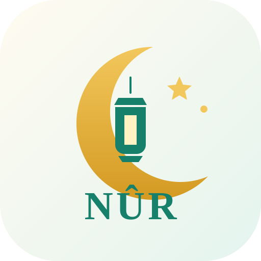
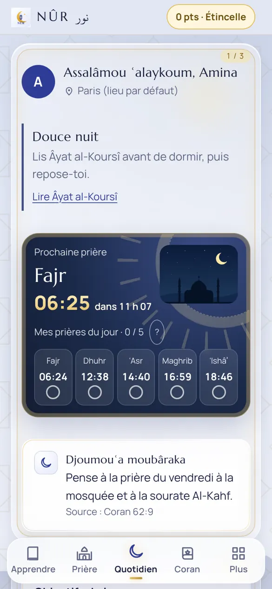
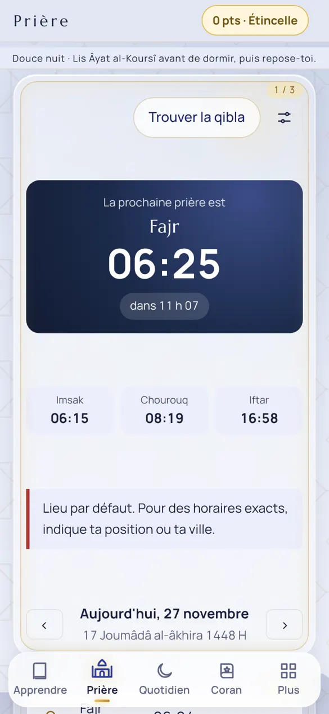
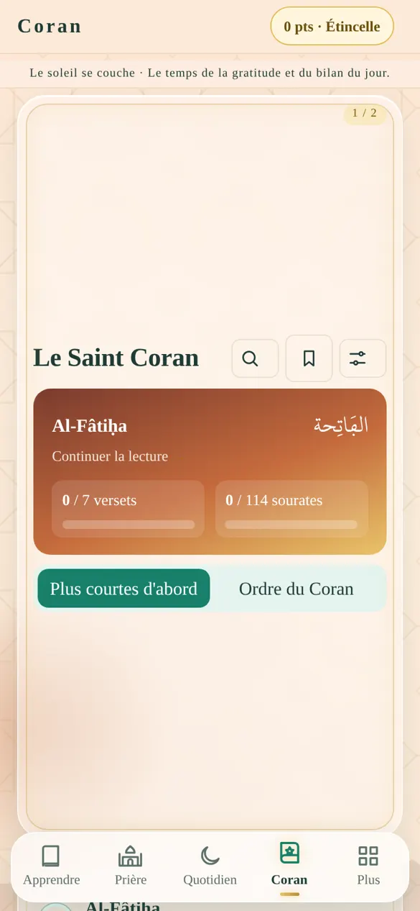
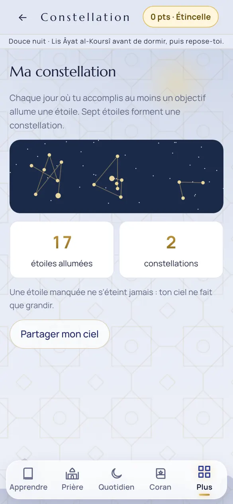
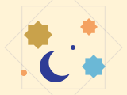
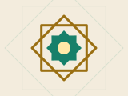

Je veux apprendre
Tu découvres l'islam ou tu reprends les bases : alphabet, ablutions, prière, premiers 30 jours guidés.
Commencer le parcours
NÛRنور Ouvrir NÛRCoran · Prière · Apprentissage
NÛR accompagne ta journée de croyant : les heures de prière de ta ville, le Coran en riwaya de Warsh avec phonétique et traduction, un parcours pour apprendre pas à pas. Puis elle te rend à ta vie.

Prière
Les horaires de ta ville, la qibla, la prière cochée d'un toucher, même celle oubliée hier. L'application change de couleurs et de message avec le moment de la journée : l'aube, le matin, le cœur du jour, le coucher du soleil, la nuit.

Coran
Le texte en riwaya de Warsh ʿan Nâfiʿ, la phonétique sous chaque verset, la traduction en français, en anglais ou en chinois, la récitation verset par verset. Une pastille pour marquer ce que tu as mémorisé, et des révisions espacées pour ne pas l'oublier.

Apprendre et progresser
Un parcours en paliers, de l'Étincelle à l'Étoile, avec leçons, quiz et fiches. Chaque jour d'effort allume une étoile de ta constellation et dévoile l'un des 99 noms de Dieu. Quand tes objectifs sont atteints, NÛR te le dit simplement : c'est assez pour aujourd'hui.

Tu découvres l'islam ou tu reprends les bases : alphabet, ablutions, prière, premiers 30 jours guidés.
Commencer le parcours
Un profil par personne, un espace enfant protégé, des sourates courtes et des étoiles à gagner.
Créer les profils
Disciple ou cheikh : compteurs de wird, mémorisation suivie, présentation des tariqas et des quatre écoles.
Voir les tariqasMosquées et associations
NÛR ouvre la page Mawaqit de la mosquée de chaque fidèle en un geste et permet d'aligner les horaires calculés sur ceux de la mosquée. Les contenus religieux sont relus par l'imam garant du projet.
Vous souhaitez présenter NÛR à vos fidèles ? Ouvrez l'application : l'adresse se partage depuis le profil.
Oui. Toutes les fonctions sont gratuites et sans publicité. Un don libre pourra soutenir le projet ; aucun accès n'en dépendra.
Sur ton téléphone uniquement. NÛR ne crée pas de compte et n'a pas de serveur qui reçoit tes données. Une sauvegarde mensuelle te propose d'en garder une copie.
Oui, après le premier chargement : le Coran, la phonétique, la traduction de ta langue et les horaires restent disponibles hors ligne.
C'est la lecture la plus répandue en Afrique de l'Ouest et au Maghreb, d'où vient une grande partie de la communauté francophone que NÛR sert d'abord.
Tout smartphone récent avec un navigateur : Android, iPhone, Huawei. Les versions Google Play et AppGallery sont en préparation.
Les contenus religieux sont sourcés (Coran, recueils de hadiths, ouvrages de référence) et relus par l'imam garant du projet. La pratique est présentée selon l'école malikite, en rappelant que les autres écoles peuvent différer.